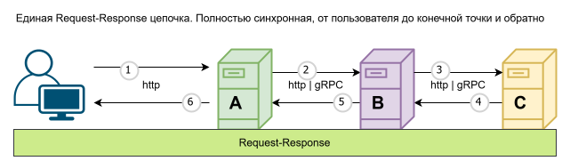
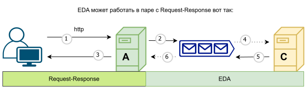
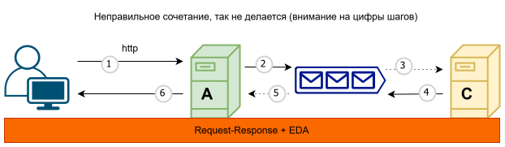

- Здесь напишу обзорно про все, в общих чертах. Подробнее в отдельных конспектах.
✅ Upstream и Downstream сервисы
- Терминология применяется в микросервисах.
- Например, бизнес-процесс вызывает сервисы в таком порядке “Заказы” > “Склад” > “Платежи” > “Доставка”.
- Upstream и Downstream - это как движение по реке. “Вниз” по реке - это по течению, а “вверх” - это против.
- Соответственно если представить порядок вызовов сервисов как движение по реке, то для “Склада” сервис “Заказы” будет апстрим сервисом, а “Платежи” и “Доставка” - даунстрим сервисами.
✅ Хореография и оркестрация
- В микросервисах единый бизнес-процесс распределен между несколькими
сервисами и поэтому между ними требуется обеспечить координацию.
- Для этой координации есть два различных подхода -
ХореографияиОркестрация.- Они могут быть как в чистом виде, а может быть гибрид.
- Для этой координации есть два различных подхода -
Оркестрация
Оркестрация- это подход с централизованным управлением взаимодействием между сервисами.- Есть компонент, называемый оркестратором, которому выделены такие
обязанности:
- Вызывать сервисы в нужном порядке, чтобы обеспечить выполнение бизнес-процесса.
- Обрабатывать ошибки, обеспечивать повторные попытки и запасные действия. Например, какой-то сервис не отвечает, или не может выполнить свою функцию, или в нем возникает ошибка - во всех этих случаях решение о том, как на эти проблемы реагировать, принимает оркестратор.
- Оркестратор может быть реализован по-разному, например:
- Как отдельный микросервис, на который возложена только функция оркестрации.
- На один из существующих бизнес-сервисов может быть дополнительно возложена функция оркестрации, если она органично ему подходит.
- Может быть отдельный готовый инструмент, специализирующийся на функции оркестрации. Это обычно называется BPMN-движки (Camunda например)
- Достоинства и недостатки
- Достоинства
- Поскольку реализация бизнес-процесса сконцентрирована в одном месте, она более наглядна, проще понять процесс. По этой же причине проще обрабатывать ошибки, делать ретраи.
- Недостатки
- TODO: недостатки я не понял, поэтому не пишу их сюда. По-моему недостатков нет, если применить в правильной ситуации.
- Достоинства
Хореография
Хореография- это децентрализованный подход в организации взаимодействия сервисов и потока данных.- Это значит, что нет единого координатора, который знает весь бизнес-процесс и шлет сервисам команды для его выполнения. БП как бы размазан по сервисам, каждый сервис публикует свои события и знает, на какие события он должен реагировать.
TODO
- А в топик идут разные типы событий? Если да, то сервисы получают все события и фильтруют типа “мое не мое”?
- Вообще события делятся на “команды” и “просто события”?
- Оркестрация хореография чаще реализуется через прямой вызов или через очереди? Под прямым вызовом я имею ввиду например через gRPC, даже если он асинхронный физически. Т.е. есть ли для Онаиболее характерный способ обмена?
✅ SAGA
- Сага нужна для организации транзакции в распределенной системе.
- В микросервисах у каждого сервиса своя собственная БД и бизнес-процесс почти всегда задействует несколько сервисов.
- Например, бизнес-процесс “оформить заказ” условно можно разделить на
шаги “Создать заказ” > “Зарезервировать товар” > “Взять оплату”.
Каждый шаг выполняется в отдельном сервисе, на отдельной БД. На этапе
“Взять оплату” оказывается что денег у клиента недостаточно или система
оплаты не отвечает после нескольких попыток. Стало быть, нам надо снять
резерв с товаров и отменить заказ.
- Т.е. по сути если какой-то сервис не может выполнить свою часть
бизнес-процесса, нам нужно “откатить” уже успешно завершенные транзакции
в других сервисах.
- Паттерн сага решает эту задачу.
- Т.е. по сути если какой-то сервис не может выполнить свою часть
бизнес-процесса, нам нужно “откатить” уже успешно завершенные транзакции
в других сервисах.
- Есть отдельный конспект, там подробнее
✅ EDA - Event Driven Architecture
Событийно-ориентированная архитектура- это модель коммуникации сервисов, при которой один сервис не вызывает другой напрямую, посылая запрос, а вместо этого публикует события. Сервисы могут подписываться на интересующие их события и когда такое событие происходит, они его получают и что-то делают. Называется Pub / Sub.- Для публикации и доставки событий используются очереди сообщений, например Kafka. В сервисах достаточно подключить необходимые библиотеки для работы с очередью, и всю рутину по доставке событий от публикатора до подписчика берет на себя очередь. В сервисах только остается написать код, обрабатывающий данные из события.
- Такая архитектура позволяет
- Развязать сервисы. Поскольку сервису не надо никого вызывать непосредственно, то легко добавлять новых подписчиков на события прозрачно для сервиса-“источника” этих событий.
- Повысить устойчивость к сбоям. В случае синхронной работы, когда сервис А вызывает другой сервис Б и ждет ответ, то если Б лежит или тормозит, то А тоже начинает тормозить и тоже может лечь. В случае EDA сервис А просто накидывает сообщения в очередь, а Б обрабатывает их в своем темпе.
- Давать моментальные ответы. Если бизнес-процесс длинный, включает в себя несколько шагов, то EDA позволяет не ждать, пока все шаги выполнятся, а отдавать ответ моментально. Например, ответить пользователю “Ваша заявка принята, за ходом выполнения следите в личном кабинете”.
- Где EDA не подходит
- Там где естественным образом нужна модель Request-Response, т.е.
“мне, чтобы дальше работать, нужно спросить и получить ответ”.
- Например, запросить остатки товара на складе, актуальную цену, статус заказа, процент выкупа товара у клиента и т.д. В этом случае один сервис напрямую спрашивает у другого безо всяких очередей и событий.
- Сюда же относится аутентификация / авторизация, платежи, т.е. когда ответ нужен “здесь и сейчас” и не допускает временного лага.
- Там где естественным образом нужна модель Request-Response, т.е.
“мне, чтобы дальше работать, нужно спросить и получить ответ”.
- Примеры
- Проведение платежа
- Я плачу за интернет, провайдер генерирует мне qr-код. Я его
отсканировал, мой запрос пошел на сервер. Это Request-Response модель,
синхронная концептуально. Дальше сервер тоже послал какие-то запросы к
платежным системам, не важно куда. Важно что до “банка” эта цепочка
запросов тянется по синхронной Request-Response модели, EDA тут пока
нет. Когда банк проверил, что денег достаточно, он, условно говоря, их
заморозил и дал ответ “Денег достаточно, все ок” и по синхронной цепочке
ответ вернулся мне в браузер, он мне показал “Оплата прошла успешно”
например. А вот все остальные дальнейшие внутренние операции уже идут
через EDA. Условно, какой-то сервис выпускает событие “деньги заморожены
под платеж”, другой сервис на это событие реагирует, может быть
выпускает свое событие, а может быть шлет кому-то тоже запрос по
Request-Response модели и т.д.
- Т.е. тут важно понимать, что модели Request-Response и Pub-Sub работают вместе, но технически не объединены - на запрос ответ синхронный, без подмешивания событий.
- Я плачу за интернет, провайдер генерирует мне qr-код. Я его
отсканировал, мой запрос пошел на сервер. Это Request-Response модель,
синхронная концептуально. Дальше сервер тоже послал какие-то запросы к
платежным системам, не важно куда. Важно что до “банка” эта цепочка
запросов тянется по синхронной Request-Response модели, EDA тут пока
нет. Когда банк проверил, что денег достаточно, он, условно говоря, их
заморозил и дал ответ “Денег достаточно, все ок” и по синхронной цепочке
ответ вернулся мне в браузер, он мне показал “Оплата прошла успешно”
например. А вот все остальные дальнейшие внутренние операции уже идут
через EDA. Условно, какой-то сервис выпускает событие “деньги заморожены
под платеж”, другой сервис на это событие реагирует, может быть
выпускает свое событие, а может быть шлет кому-то тоже запрос по
Request-Response модели и т.д.
- Проведение платежа

- Под эту картинку подходит пример “Платеж”. На всем пути от пользователя до банка - синхронный Request-Response.

- Под эту картинку - пример “Ваш заказ принят, о ходе выполнения смотрите в личном кабинете”. От пользователя до первого сервиса Request-Response, а между сервисами внутри системы - EDA с Pub-Sub.

- Неправильная комбинация.
- Технически возможно, но это будет хак для реализации Request-Response модели поверх очередей. Может использоваться в околомаргинальных случаях.
TODO
- EventBridge, SQS
Eventual Consistency
- TODO
Event sourcing
- TODO
Webhooks
- TODO
✅ Outbox
- Этот паттерн нужен для атомарного выполнения двух действий: сохранение в БД + отправка сообщения в очередь.
- В микросервисах обычно бывает так: сервис что-то закоммитил в БД и должен отправить в очередь сообщение, чтобы сообщить об успешном выполнении.
- Типичная ситуация: успешно сохранили данные в БД, сервис лег и не
успел отправить в очередь сообщение. Если сначала отправлять сообщение,
а потом сохранять данные в БД, то сервис может лечь после отправки
сообщения. В общем, от перестановки мест слагаемых проблема не
изменяется, потому что эти действия независимые, а должны быть логически
единым целым.
- Паттерн outbox позволяет эту проблему решить.
- Есть готовые инструменты, вроде Debezium, которые мониторят WAL базы данных и когда видят, что добавились наблюдаемые данные, собирают сообщение и отправляют в очередь.
✅ Circuit Breaker
- Этот паттерн нужен для предотвращения каскадной деградации сервисов в случае падения одного из них.
- Базовый смысл в том, что когда один сервис ложится, то это разными
способами приводит к тому что другие сервисы, которые к нему пытаются
достучаться, начинают деградировать в производительности и могут тоже
лечь.
- Например, сервис А шлет запросы в сервис Б, который лежит. В сервисе А начинают копиться потоки, которые не получат ответ. Тут либо потоки закончатся, либо память исчерпается, в итоге А тоже может лечь. Если для общения используется очередь, то гипотетически сервис А может забить очередь сообщениями, которые сервис Б не забирает, потому что лежит, и тут может сдеградировать уже сама очередь и проблемы начнутся уже у всех сервисов, которые ею пользуются. В общем, конкретные причины, из-за которых все начинает валиться, можно разбирать отдельно.
- Задача Circuit Breaker (
"предохранитель") - понять, что сервис Б лежит, и перестать его дергать. Обычно предохранитель входит в состав самого сервиса А. Обычно это не самописка, а готовое решение, например для Java это Resilience4j.- Базовый принцип работы предохранителя
- При обнаружении, что за последнюю, допустим, минуту, все запросы к Б
провалились, перестать слать ему новые запросы, а сразу возвращать,
например, ошибку (или заготовленную заглушку, или кэшированные данные,
это обсуждаемо). Т.о. предохранитель “разрывает” цепь, связывающую
сервисы. Это состояние предохранителя называется
open.- Т.о. сервис А не тратит ресурсы на отправку запросов, которые все равно закончатся таймаутом. По сути, метод, в котором формируется и отправляется запрос, даже не вызывается.
- Через какое-то заданное время предохранитель может перейти в
состояние
half-open, т.е. пропустить небольшое количество запросов от А к Б, чтобы проверить, не поднялся ли Б. Если эти запросы тоже провалились, значит Б еще лежит и предохранитель снова становится open. Если же выполнились успешно, предохранитель становитсяclosed, “цепь соединяется” снова и запросы идут в штатном режиме.
- При обнаружении, что за последнюю, допустим, минуту, все запросы к Б
провалились, перестать слать ему новые запросы, а сразу возвращать,
например, ошибку (или заготовленную заглушку, или кэшированные данные,
это обсуждаемо). Т.о. предохранитель “разрывает” цепь, связывающую
сервисы. Это состояние предохранителя называется
- Базовый принцип работы предохранителя
API Gateway
- точка входа в “зону микросервисов”
- принимает запрос от пользователя по http, проверяет авторизацию и принимает решение, в какой сервис отправить запрос
- т.о. служит для изоляции внешнего мира от системы, никому не известна за счет этого структура системы
CAP-теорема
CAP- consistency
- availability
- partition tolerance
Access Token
- Технологии
- keycloak
- OAuth
- Запрос приходит на гейт, затем через сервис авторизации к нему пришивается токен с правами и дальше все запросы снабжаются этим токеном, так что сервисы, на которые запрос приходит, понимают права, доступные этому запросу
CQRS
- TODO
Service Discovery
- TODO
🤷 Прокси-сервер
Прокси-сервер- промежуточная точка между источником запроса и конечным получателем.- TODO формулировка конечно дерьмовая, потому что что такое “точка”? роутер это тоже точка. А может промежуточный сервер какой-то быть, но не являться при этом проксей? Разобраться.
Reverse Proxy- обратный прокси сервер. Используется, чтобы скрыть внутреннее устройство (подсети?) от внешнего мира.- Наивный пример: есть наш контур с микросервисами, перед ним ставим reverse proxy и все запросы идут на него. Т.о. тот, кто работает с нашей системой, не знает какие внутри нее крутятся сервера, какие у них адреса и т.д., он знает только адрес reverse proxy.
- TODO
- Может ли конечный сайт понимать, что ему запрос пришел от прокси?
- Да, может.
- Может ли конечный сайт понимать, что ему запрос пришел от прокси?
Load Balancer
Вопросы
- Балансировщик вероятно ставится перед каждым сервисом системы?
- Балансировщик может как-то защищать от DDoS атак?
- Алгоритмы балансировки.
- Sticky Sessions.
- Обратные прокси-серверы.
Rate Limiter
- TODO
TLS
- TODO
DLQ - Dead Letter Queue
- TODO
SOAP
TODO
TODO
Ретраи и дедупликация сообщений
Eventual Consistency
Latency
CorrelationId
Разделение фронта и бэка на разные сервера
Database per serivce
API Gateway
Client-side discovery
Server-side discovery
Circuit breaker
Access Token
Event Driven
Event Sourcing
SAGA
CQRS
Outbox
Ключевые архитектурные темы
➖ Domain-Driven Design (DDD) Проектируем систему вокруг бизнес-домена, а не вокруг таблиц.
➖ Event-Driven Design Строим слабосвязанные системы, реагирующие на события.
➖ Проектирование отказоустойчивости Circuit Breaker, Retry, Bulkhead — не просто теория, а практическая реализация.
➖ Распределённые транзакции Saga Pattern, Outbox, гарантии доставки (At-Least-Once / Exactly-Once).
➖ CQRS и Event Sourcing Проектирование систем, готовых к высокой нагрузке.
➖ API Gateway и Service Discovery Реальная архитектура микросервисной среды.
➖ Мониторинг и наблюдаемость Prometheus, Grafana, Loki — видимость системы в продакшене.
🏗 Какие паттерны вы реально реализуете
— Idempotency Key — Circuit Breaker — Retry Pattern — Rate Limiter — Bulkhead Pattern — Outbox Pattern — Saga — CQRS — Event Sourcing — API Composition — Strangler Pattern — API Gateway — Service Discovery — Load Balancing — Access Token Pattern — Database per Service
🛠 Технологический стек 2026 года
🔹Java 🔹Spring Boot 🔹Feign 🔹Wiremock 🔹Resilience4j 🔹Apache Kafka 🔹RabbitMQ 🔹Spring Cloud 🔹Eureka Server 🔹Netflix Zuul 🔹Maven 🔹GitHub 🔹KeyCloak 🔹Postgres 🔹MongoDB 🔹Grafana 🔹Loki 🔹Prometheus 🔹Promtail 🔹Grafana K6 🔹Docker 🔹Kubernetes